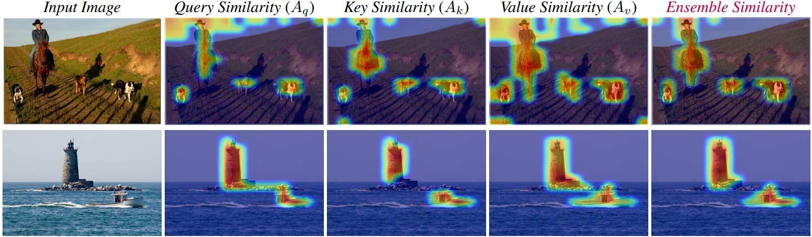
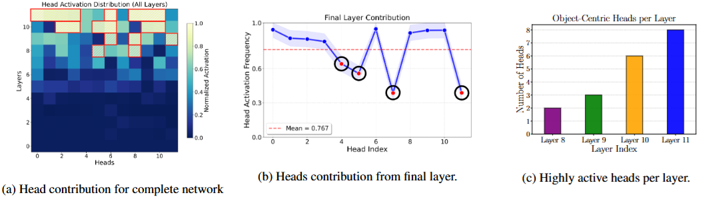
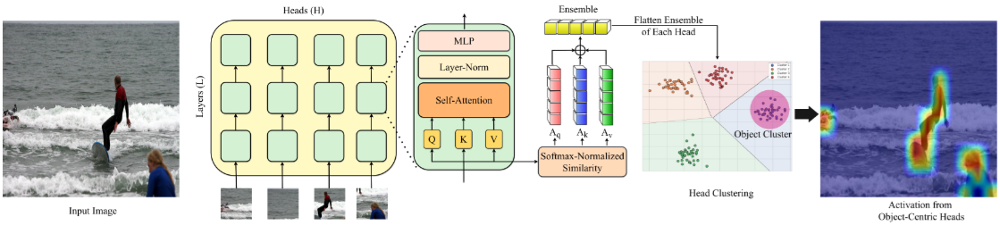

Finding Distributed Object-Centric Properties in Self-Supervised Transformers
CVPR 2026


Figure 1. Object-centric information is encoded in patch-level interactions. We visualize the inter-patch similarity maps computed from the Query (Q), Key (K), and Value (V) representations of patch tokens. Each component captures a complementary view of object structure. The Ensemble aggregates all three components, producing robust foreground-background separation and precise object localization.
Abstract
Self-supervised Vision Transformers (ViTs) like DINO show an emergent ability to discover objects, typically observed in [CLS] token attention maps of the final layer. However, these maps often contain spurious activations resulting in poor localization. This occurs because the [CLS] token, trained on an image-level objective, summarizes the entire image rather than focusing strictly on objects, diluting the rich, object-centric information existing in local, patch-level interactions. We perform a systematic analysis of inter-patch similarity across all layers and attention components (query, key, and value) to uncover where object-centric information truly resides. Based on our insights, we introduce Object-DINO, a training-free method that extracts this distributed object-centric information to drastically improve downstream tasks like unsupervised object discovery and hallucination mitigation in Multimodal Large Language Models (MLLMs).
Key Analyses & Insights
A core contribution of our work is shifting the focus away from the globally-optimized [CLS] token to uncover how local patch-level interactions natively encode scene structure. Our systematic analysis yields two critical findings that redefine how we extract emergent object representations from self-supervised ViTs:
Insight 1: Complementary Signals in Query, Key, and Value
Prior patch-level methods (like TokenCut) relied exclusively on Key (K) features. By computing normalized self-similarity matrices for all attention components, we discover that Queries (Q), Keys (K), and Values (V) all possess strong but complementary localization properties.
• Query Similarity reveals which patches seek similar information.
• Key Similarity reveals patches offering similar contextual cues.
• Value Similarity identifies patches with similar feature content.
Combining these into a unified Ensemble Similarity Matrix mitigates individual component artifacts, creating a highly robust, low-noise representation of object saliency.
Insight 2: Object-Centricity is a Distributed Property
It is a common assumption that the strongest object representations exist exclusively in the final layer of a ViT. By characterizing every attention head across the network using our ensemble similarity matrix, we prove that object-centric information is hierarchically distributed.

Figure 2. Analysis of the object-centric head distribution. (a) The heatmap demonstrates that numerous heads in intermediate layers (e.g., Layers 8-10) are consistently selected as object-centric, proving it is a distributed phenomenon. (b) The final layer contribution plot reveals several "noisy" (non-object-centric) heads. (c) The histogram shows the number of strongly active heads per layer.
Our analysis of over 4,000 COCO images reveals that:
1. Not all final-layer heads are object-centric. Several heads in the final layer encode global context rather than objects. Naively aggregating them introduces significant noise.
2. Intermediate layers matter. Numerous highly robust object-centric heads exist in intermediate layers. Ignoring them discards valuable localization data.
The Object-DINO Method
Motivated by our analysis, we introduce Object-DINO, an entirely training-free algorithm designed to automatically discover and extract the distributed set of object-centric heads. The process operates in two phases:
- Phase 1: Feature Extraction. For every attention head across all layers, we compute the patch similarity maps from its Q, K, and V representations. We ensemble and flatten these maps to create a feature vector that describes that specific head's localization behavior.
- Phase 2: Head Clustering & Selection. We cluster all heads based on these behavioral features using k-means. Guided by the empirical observation that object-centric information concentrates heavily toward the end of the network, we automatically identify the "Object Cluster" as the one containing the highest prevalence of final-layer heads.
By aggregating the similarity maps from only this specialized, distributed subset of heads, Object-DINO produces high-fidelity foreground-background separation while filtering out non-object noise.

Figure 3. Object-DINO Overview. Our training-free algorithm computes patch similarity maps from Query, Key, and Value representations, ensembles them, and clusters the heads to automatically identify the distributed object-centric cluster, filtering noise from non-object-centric heads.
Applications & Downstream Results
1. Unsupervised Object Discovery
We integrate Object-DINO into the graph-based TokenCut framework, replacing their naive final-layer Key aggregation with our automatically discovered distributed heads. This single, training-free swap yields massive performance gains across all benchmarks for both DINO-v2 and DINO-v3 models. Specifically, we observe CorLoc improvements ranging from +3.6 to +12.4 points on PASCAL VOC and COCO 20k.

2. Mitigating Object Hallucinations in MLLMs
Multimodal Large Language Models (MLLMs) frequently hallucinate objects not present in the image. We leverage Object-DINO as an open-set visual grounder. We propose a training-free, dual-branch decoding strategy: a standard branch and a visual guidance branch steered by the Object-DINO saliency map. By amplifying tokens consistent with this explicit visual evidence, our method corrects hallucinations and achieves state-of-the-art Precision and F1 scores on the POPE and CHAIR benchmarks, without the heavy computational overhead of multi-pass diffusion methods.

Citation
The website template was inspired by Michaël Gharbi and Ref-NeRF.